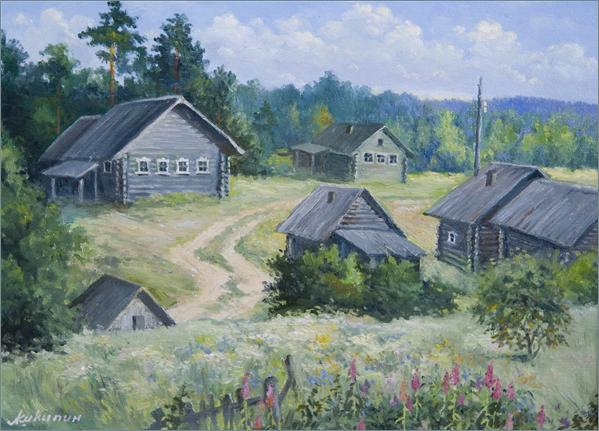

Once upon a time in a land of magic and make believe there lived a boy named Theo. He was an ordinary boy with no magical powers and to be truthful there was nothing exceptionally extraordinary about him at all.
Theo lived in the tiny village of Odg. Odg was a farming village with large pastures of green grass and many animals. There was one large farmhouse and one large barn that belonged to farmer Aguirre. Often times at dusk Theo would sneak into farmer Aguirre's barn to sleep. You see young Theo was an orphan. And as orphan's have no parents to take care of them Theo had learned to live on his own with the help of strangers. Many of the strangers did not realize they were helping Theo but that's neither here nor there.
One day in the center of town farmer Aguirre came into town with several other men from the village. All of them appeared to be walking beside a great beast of some kind. But it was impossible to tell what kind of beast it was because a great sheet of cloth was covering the head and body of the beast. The gargantuan nature of the beast was apparent for the beast was snorting and snuffing and huffing and puffing. Young Theo was quite curious about this beast and wondered what it could possibly be that lay under the cloth that covered it.
That night Theo snuck into Farmer Aguirre's barn to sleep. He thought he might catch a peak at the beast but it was not there. Theo was just about to make his bed for the night when something in the distance caught his eye. He squinted his eyes and peered deep into the darkness of the night across the great rolling fields. Was it a light of some sort? It was indeed! A fire was flickering in the distance, Theo was sure of it. He immediately got up and started moving toward the fire. He made sure to keep silent and stealthy so that no one would notice him approaching.
As he got closer Theo was beginning to make out a figure that seemed to be a horse. It was most certainly the most enornous, gargantuan horse that young Theo had ever seen. He could see the men from the village struggling with the horse with ropes and whips. The men did not appear to be able to contain the great beast. As Theo neared the camp he was struck with fear. Had he just seen what he thought he had seen? He stopped dead in his tracks. It couldn't be so. It wasn't possible. This was no ordinary horse. Theo looked again and this time he was sure; the horse, the most fantastically hunormous beast of a horse he had ever laid eyes on was not a horse at all. It was some sort of mythical creature: